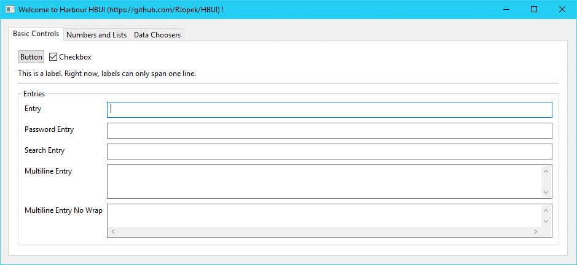
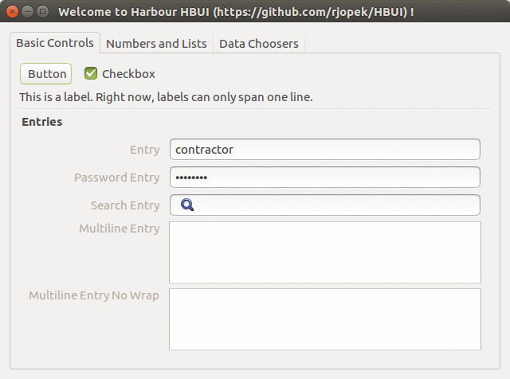
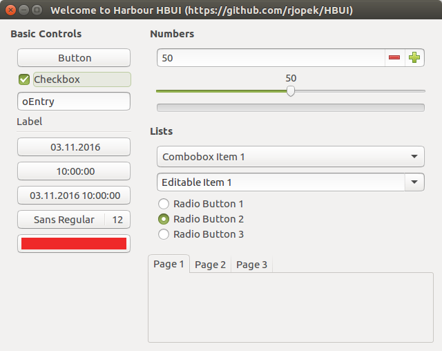
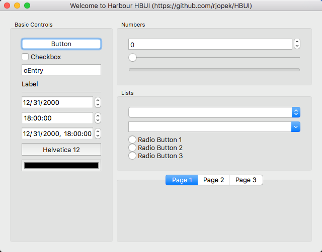
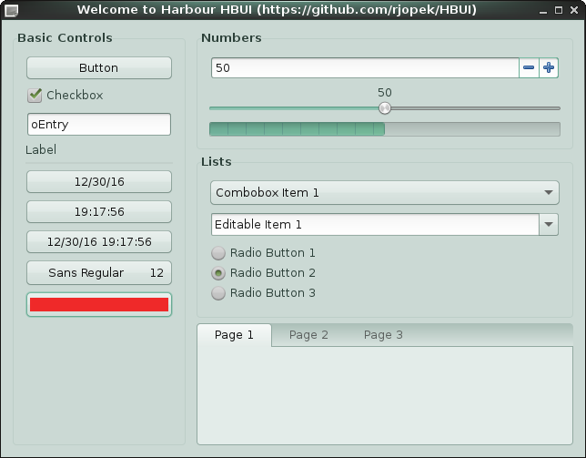

HBUI
Graphical user interface library for the Harbour compiler, this is a wrapper library around libui, a portable GUI library.
- Read more about the - Cross platform
- Read more about the - Harbour (software)
How to get
- first of all please download Harbour
- HBUI live source repository
You’ll need Git version control software installed on your system, and issue this command:
$ git clone https://github.com/rjopek/hbuiYou can get subsequent updates using this command:
$ git pullHow to build
For all systems, use the command:
$ hbmk2 hbui.hbpTo test it, type:
$ cd samples
$ hbmk2 window.prg -run- It is recommended to use Harbour 3.2
- Read tutorial
- Binary download, read tutorial
Sample source code
FUNCTION Main()
LOCAL oWindow
oWindow := uiNewWindow( "Main Window", 800, 600, .T. )
uiControlShow( oWindow )
uiMain()
uiUninit()
RETURN NILScreenshots








License
MIT
Free Software, Hell Yeah! ;-)